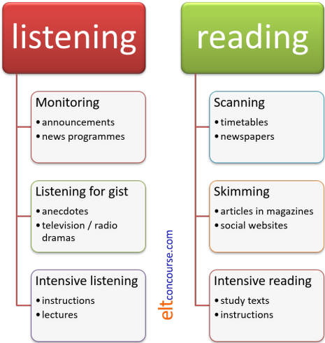

TKT Module 1: Describing language and language skills
Receptive skills

The skills part of the course for Module 1 is divided into two parts. This part deals with the receptive skills and the next with productive skills. They are arranged like this:

This guide is quite short and summarises what you need to know
for the TKT.
In this site, you will find longer guides to the skills in the
teacher-training section. If you prefer to do those guides and
then return to this one for a brief summary and revision, use this
menu. Links will not open in a new tab so use the
back button to come back here.
| understanding reading | teaching reading |
| understanding listening | teaching listening |
 |
Key concepts in this guideBy the end of this part of the guide, you should be able to understand and use these key concepts:
|
Look out for these words like this
in the text.
There will be tests at the end of the guide for you to check that
you understand the ideas.
 |
 |
Reading and listening |
 |
 |
Text types |
  |
Task 1:
Get a pen and a piece of paper and write down the last four
things you read and the last four things you listened to
(not just heard). Click here when you have thought of something. |
| Here's a list of possible
text types that anyone might read or listen
to in a day
or so. (By the way, note here that we use the word text for any piece of language whether it is written or spoken.) |
|
| Reading | Listening |
| this web page | a television news programme |
| a recipe | an announcement on a train |
| someone's newspaper headlines on the bus | someone talking at a meeting |
| a bill in a café | a radio music programme |
| a novel | a shop assistant explaining a product |
| the TV schedule | the person(s) you live with |
| a label on a tin | other people's conversation |
| a work e-mail | a television quiz game show |
Probably, not all of the text types you read or listened to are in this list. It is very difficult to predict what people will hear and read and why. That is one reason that teaching the area is quite difficult.
 |
Text purposes |
All writers and speakers write and speak for a reason. The purpose of the text will often determine:
- How the text is organised:
this is called the staging. This refers to how the information is presented conventionally in English.
For example, we know, when we are reading a news report, that the main event will probably be described in the first paragraph and the outcome with any future action will be presented at the end. This knowledge allows us to access the text quickly and find what we want. - What language forms are in the
text:
this includes, for example, types of conjunction, tenses, verb types, prepositional phrases, modal auxiliary verbs and so on.
For example, a recipe will often include adverbs which show the ordering of actions such as firstly, then, finally etc. but a news report will often begin in the present perfect (to show it is relevant to and has changed the present) as in, for example:
Three men have been arrested at Gatwick airport
but after the first paragraph, the tense will often be past simple to related what happened as in, for example:
Police were alerted to the vehicle by a member of the public
and, at the end, the tense form will often refer to the present or the future as in, e.g.:
The men will appear in court on Thursday, charged with ... - The layout of the text:
this includes whether it comes with pictures, graphics or different sizes and types of print (written texts), with film clips, gestures, graphics or special effects (spoken texts) and so on.
For example, a news report will often come with a general picture of the scene (and often a map of the area) but a letter will not but will have the conventional addresses, dates and so on in recognisable places.
If we know the purpose of a text. it will often make
understanding it very much easier because we will know where to look
for information and when to listen carefully.
This is called generic knowledge.
|
|
Task 2:
Test your generic knowledge of these written texts. Two questions: a) What sorts of texts are they? b) where will you find the most important information? Click here when you have done that. |

What sort of text?
- The first text is a newspaper
article:
- It has a banner headline to catch the eye
- There is a large graphic to intrigue the reader
- The text is divided into columns
- Paragraphs are short and spread out to make reading easy
- The second text is a technical
article of some kind:
- The title comes in two parts
- The authors' names are at the top
- There is a subtitle which is probably 'Abstract' or 'Summary'
- There's a graphic
- The text is dense and continuous
- The third text is a recipe:
- There's a picture of the finished meal
- There's a list of ingredients
- The procedure is numbered in stages
- Important information
- Text 1: the first paragraph will set the scene: when, where, who? The final paragraph will sum up the situation. Everything in between can be ignored.
- Text 2: the abstract at the beginning will tell you if you need to read it. At the end there will probably be a summary of the main points and that will often include suggestions for further research and work. Detail will be in the text.
- Text 3: the list of ingredients will tell you if you have what's needed. All the text is important because it is a set of instructions.
If we know a little about the topic of the text, it will also make
understanding easier. This is known as using
knowledge of the world to help us
understand.
For example, when reading a news story about a terrorist alert at an
airport, we can bring our knowledge of the people involved (police,
anti-terrorist specialists, immigration officers etc.) and places
(long-stay car parks, immigration control, departure lounges etc.)
to the text so we can also predict who will be involved and what
happened.
We can also bring our knowledge of the world to other sorts of text
so, for example, if we are reading an email from a friend, we will
already share lots of information so we know who and what is
referred if someone writes about my sister or my job
and we do not need to have that information in the text.
We also bring our general knowledge to specialist texts in
professional fields, of course, so someone who is concerned with an
area will not need to have everything explained. You are doing
this now because we have talked here about things like verb tenses
and conjunctions and assume, because you are a teacher of English,
that you know what is meant by these terms.
|
|
Task
3:
Now look at your list and write why you
read or listened to the texts. Click here when you have written something. |
| Here's a list of possible reasons for listening or reading certain text types. Your answers may be different, of course. | |||
| Reading | Listening | ||
| this web page | to learn something | a television news programme | to find out about an event |
| a recipe | to cook a meal | an announcement on a train | to get off at the right station |
| someone's newspaper headlines on the bus | to see what's in the news | someone talking at a meeting | to understand and respond |
| a bill in a café | to check the price | a radio music programme | for pleasure |
| a novel | to follow the story for pleasure | a shop assistant explaining a product | to find out what something does |
| the TV schedule | to choose what to watch at 8 o'clock | the person(s) you live with | to socialise |
| a label on a tin | to see what's in something | other people's conversation | to find out what is being talked about |
| a work e-mail | to understand and respond | a television quiz game show | for fun to answer questions if you can |
Knowing why we are reading or listening to a text helps us to decide how to read or listen. To explain:
- Listening:
- When we are dealing with some listening texts, for
example, a set of instructions or a waiter explaining what's
in a dish, it's important that we understand nearly
everything. If miss something important we may make a
serious mistake or get the wrong meal.
Some listening settings allow us to interrupt and ask for clarification or repetition, e.g., the work instructions or the waiter's explanation. Some settings, such as lectures, don't allow that, so it's important to be even more careful.
This is called intensive listening. - Typically, in a TV news programme, people will watch and
listen quite casually until a key word or picture alerts
them to an item of interest. Then they switch listening
mode and pay more attention. Travel announcements are
often dealt with this way. If we recognise that the
announcement does not concern our journey, we just switch
off until the next one comes along.
This kind of listening is called monitor listening. - A TV soap opera or an anecdote might require some
attention but as long as we get the gist of what's going on,
it isn't usually necessary (or possible) to catch every word
and every nuance. Typically, an anecdote is told
face-to-face or over the 'phone so in this case we also need
occasionally to show interest and comprehension. We do that
through what's called back channelling (grunts,
exclamations such as oh, really?, wow, gosh etc., nods,
smiles etc.).
We are gist listening. This is also known as extensive listening because we do not need to understand everything we hear. - Finally, some texts require our full attention, even to
the point of making notes to help us recall important
information. Here, we need particularly to pay attention to
the speaker's signals. For example, something beginning
Here's the key point: ...
is likely to be important but something beginning
By the way, ...
can probably be safely ignored.
This is a difficult skill because it combines monitoring, listening for gist and intensive listening.
- When we are dealing with some listening texts, for
example, a set of instructions or a waiter explaining what's
in a dish, it's important that we understand nearly
everything. If miss something important we may make a
serious mistake or get the wrong meal.
- Reading:
- When we are dealing with some written texts, for example, a recipe or a
set of instructions, it's important that we understand
nearly everything. If the book says twist anti-clockwise
or do not allow it to boil, it's important that we get it
right. Fortunately, when we read, we can usually take the time
to re-read as often as we like and use a dictionary when we
don't understand.
Typically, study texts (such as this one) or texts with very important information (instructions at work, information about finance and tax and so on) also require this approach. We may even have to take notes!
This is intensive reading. - Typically, on a news website, people will run their eyes across the
links looking for a story that interests them and then access the
text for a more detailed look at the information.
Even when we are quite interested in a story, we still often won't read every word, preferring to skip to the important (for us) bits of the story.
Similarly, other texts, such a bus timetable require us just to look for what we need. We can't usually just read from top to bottom, left to right because we don't want the information from most of the text. We only want to know when the next bus goes to where we want to be. If you are looking for a name in a telephone directory, you don't start at page one and read till you find it.
This is called scanning or scan reading. - Depending on how much we are engaged, reading a novel requires a
different approach, too. We will usually read with some care
and even back-track to re-read sections but we can ignore parts of
the text and simply follow the story. If we are getting a
bit bored, we may even start to glance through the text to find out what
happened in the story.
Ignoring whole parts and just getting the gist is called skimming or skim reading. This is also called extensive reading because it is not necessary to understand every word.
- When we are dealing with some written texts, for example, a recipe or a
set of instructions, it's important that we understand
nearly everything. If the book says twist anti-clockwise
or do not allow it to boil, it's important that we get it
right. Fortunately, when we read, we can usually take the time
to re-read as often as we like and use a dictionary when we
don't understand.
It's clear, then, that we use different skills depending on:
- the sorts of text we are accessing
- our reasons for accessing it
The summary of all this:

 |
Top-down and Bottom-up processing |
These are two key ideas but good readers and good listeners use them both at the same time. They are not difficult to understand.
- Top-down processing
concerns - using your knowledge of the world in general to understand
what you read or hear. For example, if you know that
penguins live in the Antarctic, you know that a text about them
will not mention North Africa but you will be alert to words
like snow, ice, Weddell Sea and so on.
using your knowledge of typical text layout and staging to locate specific information. You did this at the beginning of the guide.
using your knowledge of the topic to help you understand. For example, if you are an expert gardener, you will know how to do a lot of things with plants and can recognise words like dibber, wheelbarrow, shears, espalier etc. so can focus on the new material in a text (spoken or written). - Bottom-up processing concerns using your formal linguistic knowledge of:
- the pronunciation of English to distinguish, e.g., between
pin and bin.
lexis and how it is pronounced to understand meaning in a written or spoken text.
intonation to understand a speaker's emotional state and intention.
the grammar of the language to distinguish, e.g., between
He arrived
and
He has arrived
conjunctions, cohesive devices such as pronouns and sequencers to identify connections and relationships between ideas.
 |
Teaching implications |
|
|
Task 4: Think what these might be. Then click here to compare your list. |
- Text types:
We need to expose our learners to a range of text types and explicitly focus them on things like staging and layout. If our learners can recognise the text type and know where information will come, it will help them considerably. - Skills:
We need to separate out the skills and focus on them in isolation before asking learners to use them together. - Purposes:
Learners need a reason for listening or reading so that they know which skills to use and how to 'attack' a text. You can't understand easily if you don't know what you are looking or listening for.
There are lots of guides on this site which you
can follow to learn more about reading and listening in English. A good
place to start is
the
initial plus section. That has a sections on understanding
and teaching all four skills.
In addition, there are exercises in the section for learners of
English designed to help them improve their reading speeds.
Click here to go there (new tab).
 |
Self-test questions |
Before you go on, make sure you can answer these questions. If you can't, go back to the sections which give you trouble.
- What sort of text is a recipe?
- How are news stories laid out in your local newspaper?
- If you read a timetable to find out the time of your train, what subskill are you using?
- Explain what backchanneling is.
- What is bottom-up processing of a reading text?
If you are happy with your progress, go on.
 |
Tests and practice for TKT |
Return to the Module 1 index:

or go on to the next
guide which is to productive skills.